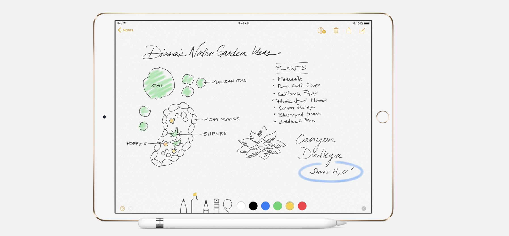
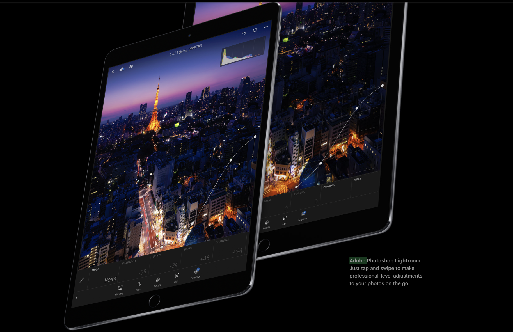
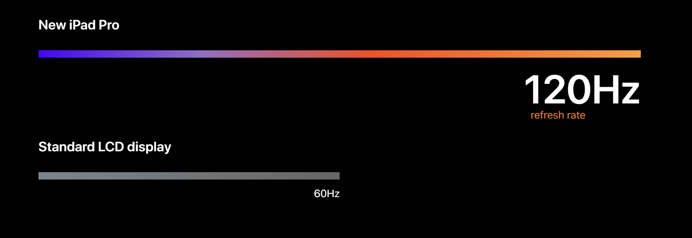
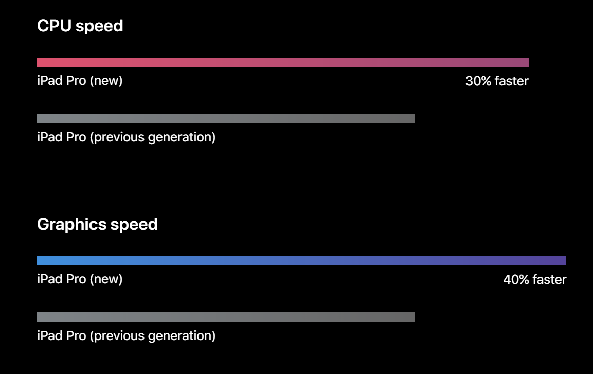
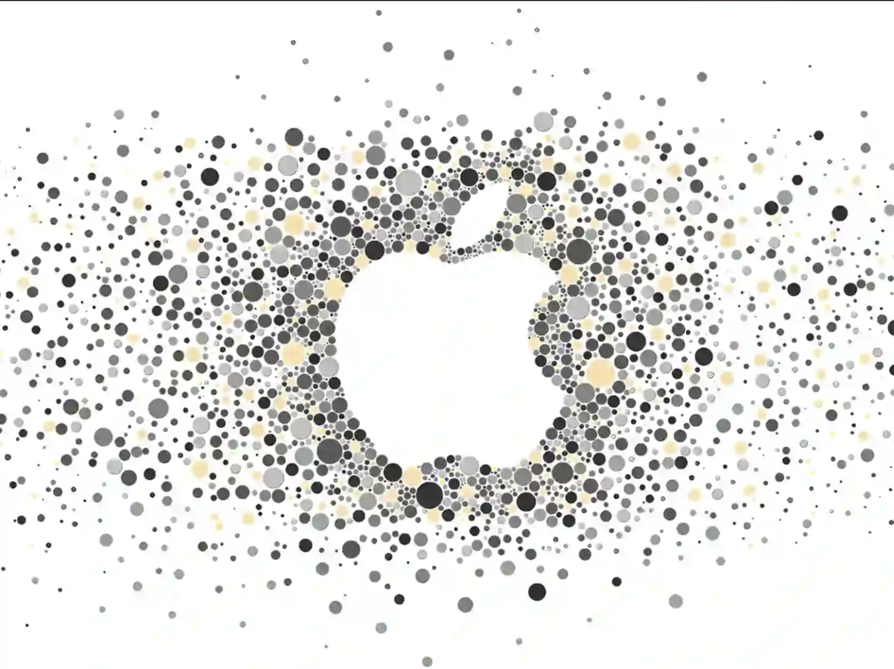
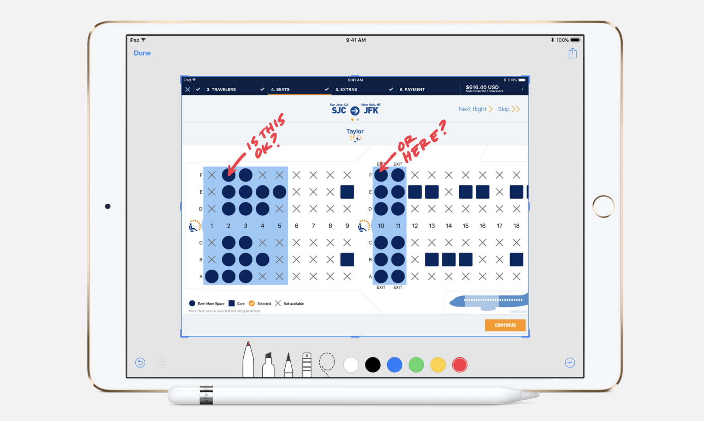
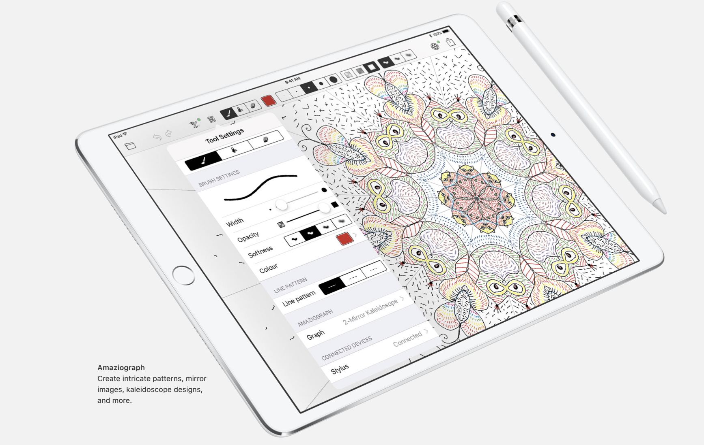
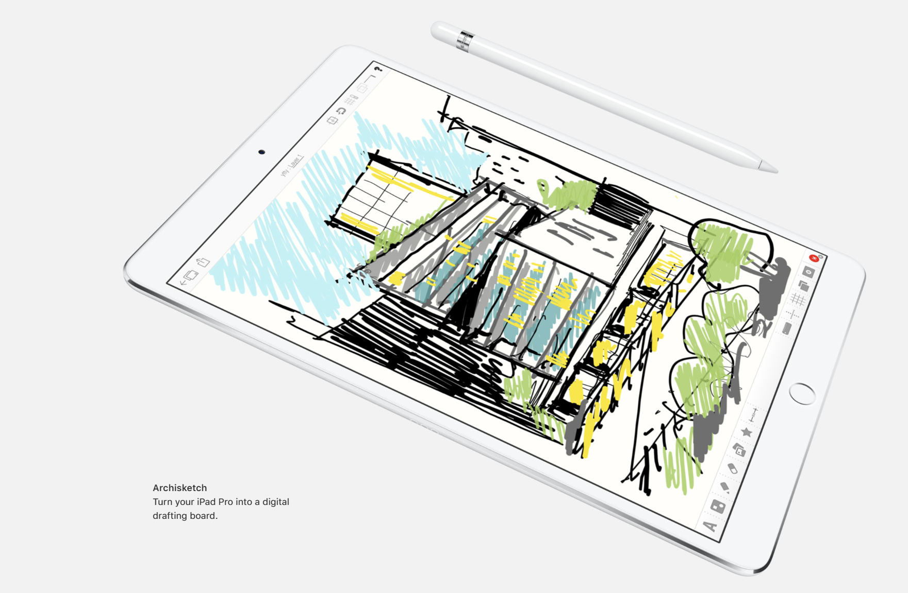

在 2017 年的 WWDC（苹果全球开发者大会）上，苹果推出了第二代 iPad Pro 家族，包含全新的 10.5 英寸版本以及更新后的 12.9 英寸版本。
如果说第一代 iPad Pro 2015向世界宣告了苹果进军“生产力工具”的野心，那么 2017 款的 iPad Pro 则是在底层技术上真正补齐了“Pro”的体验。它不再仅仅是屏幕变大、加上了手写笔，而是从人机交互最核心的视觉反馈层面，彻底拉开了与普通平板电脑的差距。



1200 万像素后置摄像头（光学防抖，ƒ/1.8 光圈），700 万像素 FaceTime HD 前置摄像头。通常平板电脑的摄像头总是落后于同期的手机，但 2017 款 iPad Pro 是个例外。
进一步了解性能表现
全新 iPad Pro 提升了屏幕的刷新率，这让 Apple Pencil 的响应速度达到了前所未有的迅捷级别。它拥有先进的感应器，不仅能测量力度，还能感知倾斜角度，书写、绘画、作图的感觉就像使用传统铅笔在纸上一样自然。
非常棒机身侧面的三个金属触点，实现了供电与数据的即时传输。它省去了蓝牙配对的繁琐，让键盘真正成为设备的一部分，体现了苹果对“极简连接”的工业追求。
了解更多 〉
通过将边框缩窄 40%，苹果在 10.5 英寸机型上实现了显示面积与重量的完美平衡。这种严丝合缝的尺寸控制，让用户即便单手握持也依然轻便自然。
立即换购 〉
通过四通道环境光传感器，屏幕能随环境光自动调节色温与对比度。无论身处何种光线，视觉感受都如同真实的纸质印刷品般自然且护眼。
了解更多 〉